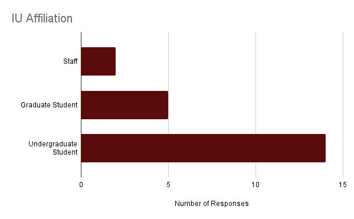
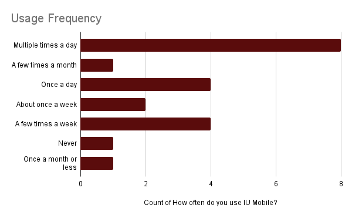

The Feedback Form
The anonymous form, created in Google Forms, begins by asking some basic demographic and usage questions, such as:
- IU affiliation (student, faculty, or staff)
- Campus affiliation
- Devices on which IU Mobile is installed
- How often they use IU Mobile
It then asks specific questions about the users' sentiments toward IU Mobile, such as:
- How would you rate your overall experience with IU Mobile on a scale from 1 to 5?
- What is your favorite thing about IU Mobile?
- What is your least favorite thing about IU Mobile?
- What is something you wish IU Mobile could do that it currently cannot do?
The form was sent out on Facebook, Instagram, LinkedIn, Reddit, and text message.
The Results
In total, the form received 21 responses throughout November and December 2024. Most were from students, with two staff respondents.
Over 85% of respondents used IU Mobile at least once per week, with over half using it daily or multiple times per day.
Likes
- Bus Tracking
- Clock In/Out
- Convenience
- One.IU Links
- Crimson Card
Dislikes
- Frequent Logins
- Loading Issues
- App Exits
- Search
- Unintuitive Interface
Desired Behavior
- Expanded Map Functionality
- Canvas Integration
- Skip One.IU Login
- Display Nearby Events
- Class Registration
Next Steps
After presenting my findings to my supervisors, Cody Thompson and Alan Milner, we are discussing ways to solicit user feedback at a larger scale. This may include context-dependent feedback forms within IU Mobile, for instance a form displaying on the search screen asking about the relevance of search results.